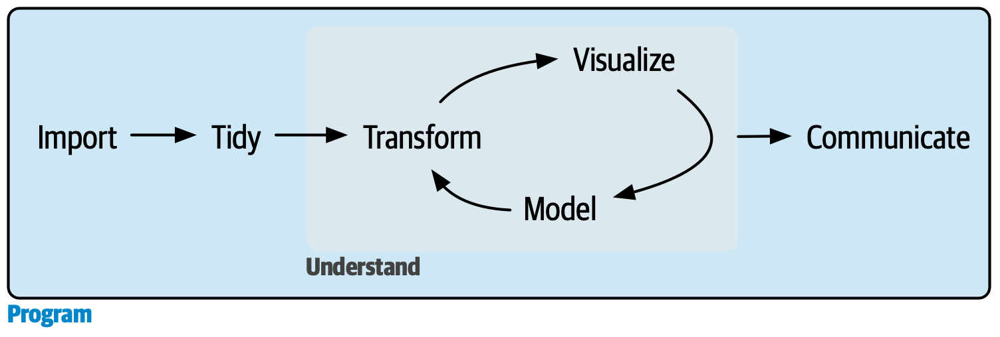

编程
在本书的这一部分，你将提升自己的编程技能。编程是所有数据科学工作都需要的一项贯穿性技能：你必须使用计算机来做数据科学；你无法在脑海中，或者用纸和笔来完成。
编程会产出代码，而代码是一种沟通工具。显然，代码会告诉计算机你希望它做什么。但它也向其他人类传达意义。将代码视为一种沟通媒介非常重要，因为你所做的每一个项目本质上都是协作性的。即使你没有和别人一起工作，你也肯定会和未来的自己合作！编写清晰的代码非常重要，这样其他人（比如未来的你）才能理解你为什么用那样的方式来处理一项分析。这意味着，提升编程能力也包括提升沟通能力。随着时间的推移，你希望你的代码不仅更容易编写，而且更容易被他人阅读。
在接下来的三章中，你将学习提升编程技能的技巧：
复制粘贴是一个强大的工具，但你应该避免重复使用它超过两次。在代码中重复自己是危险的，因为它很容易导致错误和不一致。因此，在 25 函数 中，你将学习如何编写函数 (functions)，这能让你将重复的 tidyverse 代码提取出来，以便轻松复用。
函数能提取出重复的代码，但你经常需要对不同的输入重复相同的操作。你需要迭代 (iteration) 的工具，让你能一遍又一遍地做类似的事情。这些工具包括 for 循环和函数式编程，你将在 26 迭代 中学习它们。
当你阅读更多他人编写的代码时，你会看到更多不使用 tidyverse 的代码。在 27 Base R 实战指南 中，你将学习一些你在实践中会遇到的最重要的基础 R 函数。
这些章节的目标是教会你数据科学所需的最低限度的编程知识。一旦你掌握了这里的内容，我们强烈建议你继续投入时间提升你的编程技能。我们写了两本书，你可能会觉得有帮助。《Hands on Programming with R》，由 Garrett Grolemund 撰写，是 R 作为一门编程语言的入门介绍，如果 R 是你的第一门编程语言，这本书是一个很好的起点。《Advanced R》由 Hadley Wickham 撰写，深入探讨了 R 编程语言的细节；如果你有现成的编程经验，这本书是一个很好的起点，一旦你内化了这些章节中的思想，它也是一个很好的进阶选择。